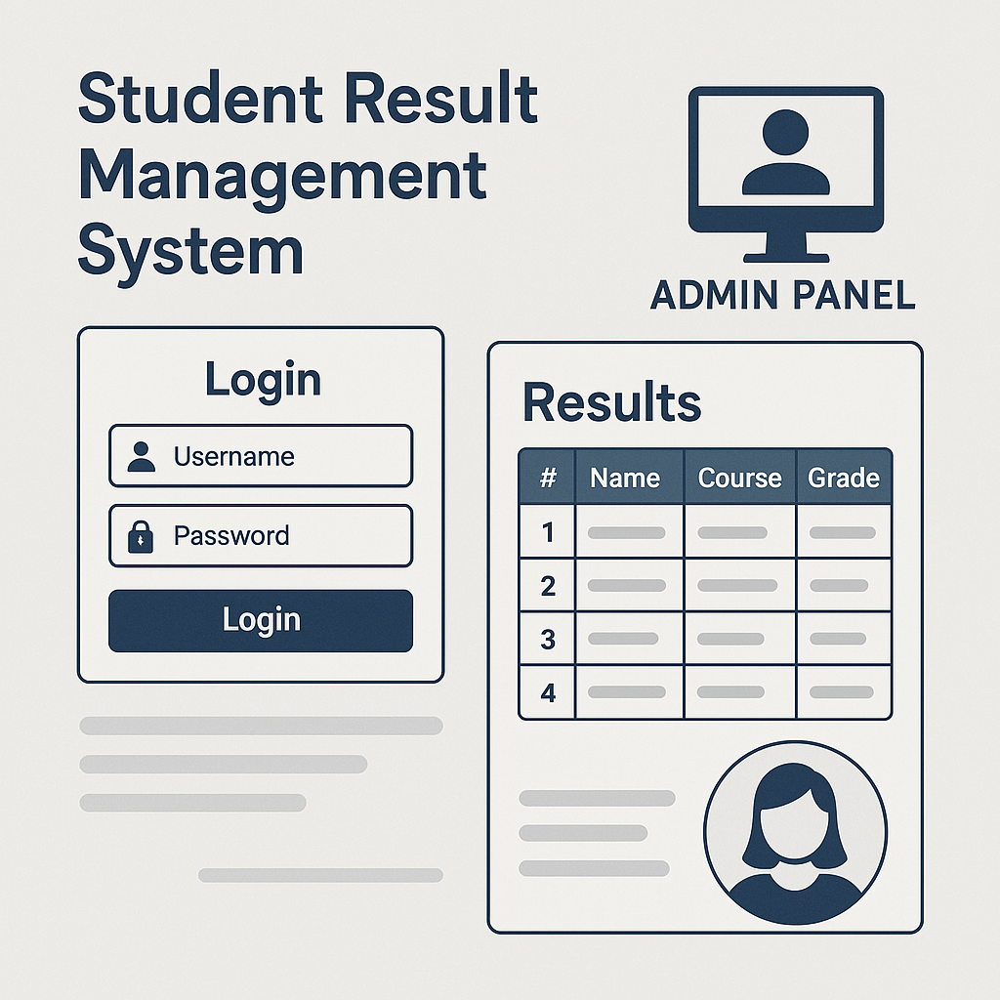

Projects

Student Result Management System (With Login & Admin Panel)
Designed a web-based system with secure login and admin panel for managing student records and results. Built with Python, MySQL, and Linux deployment, features user authentication and CRUD operations.
LWC Algorithm on FPGA, using Verilog coding
Designed and implemented a high-speed, FPGA-based light-weight cryptographic (LWC) accelerator using System Verilog coding, optimizing performance for secure IoT applications.
Data Cleaning, Preprocessing and Management of Employee Datasets
Cleaned, preprocessed, structured and analyzed employee data sets to enhance consistency and data organization. Focused on handling structured datasets, utilizing popular data science tools to improve data organization.
Work Experience
Student Intern
at Centre for Development of Telematics (C-DOT), Bengaluru.Currently working as a student intern at C-DOT Bengaluru on implementing and testing 5G NR features using the OAI 5G platform, including modulation and coding schemes, RACH procedures, and MIMO configurations.